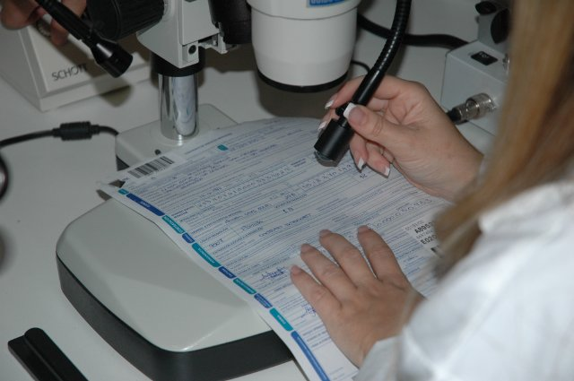
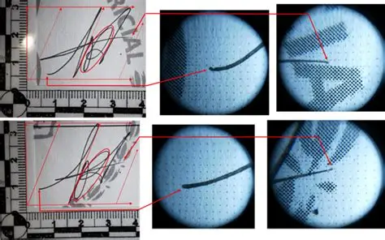

Los fraudes, falsificaciones de testamentos y notas de rescate requieren de un análisis científico sobre el soporte físico del delito: los documentos. La documentoscopía es la disciplina que se encarga de examinar documentos cuestionados para demostrar su autenticidad o falsedad.


Dentro de esta área destaca la grafoscopía, que estudia la escritura a mano y las firmas. Los peritos analizan factores que son imposibles de imitar perfectamente, tales como:
Usando luces ultravioleta y análisis químicos de tintas, estos profesionales desenmascaran fraudes complejos y aseguran que los documentos presentados ante la ley sean testimonios verdaderos.